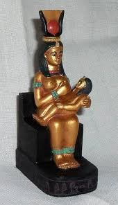
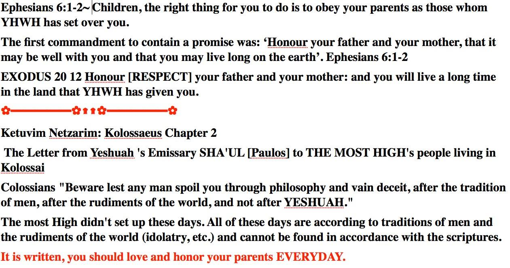
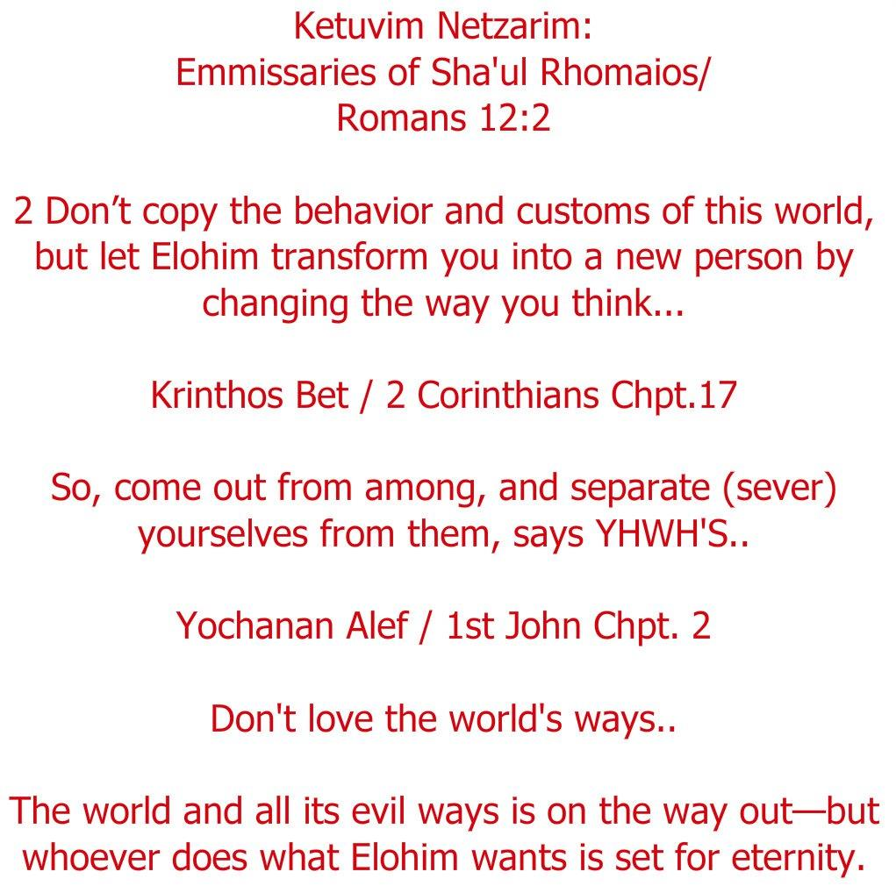
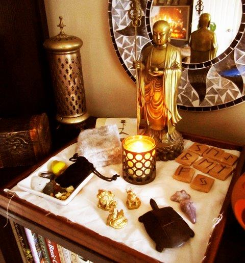
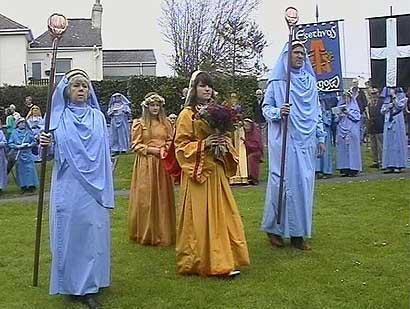
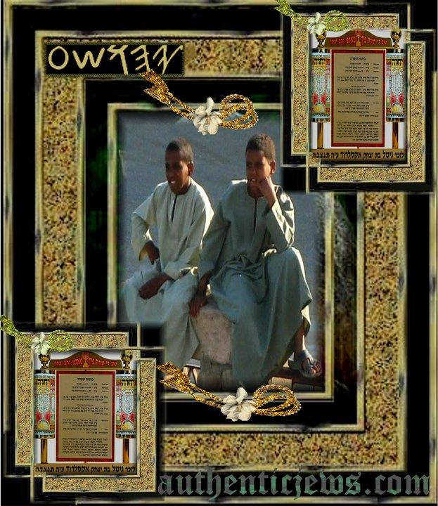
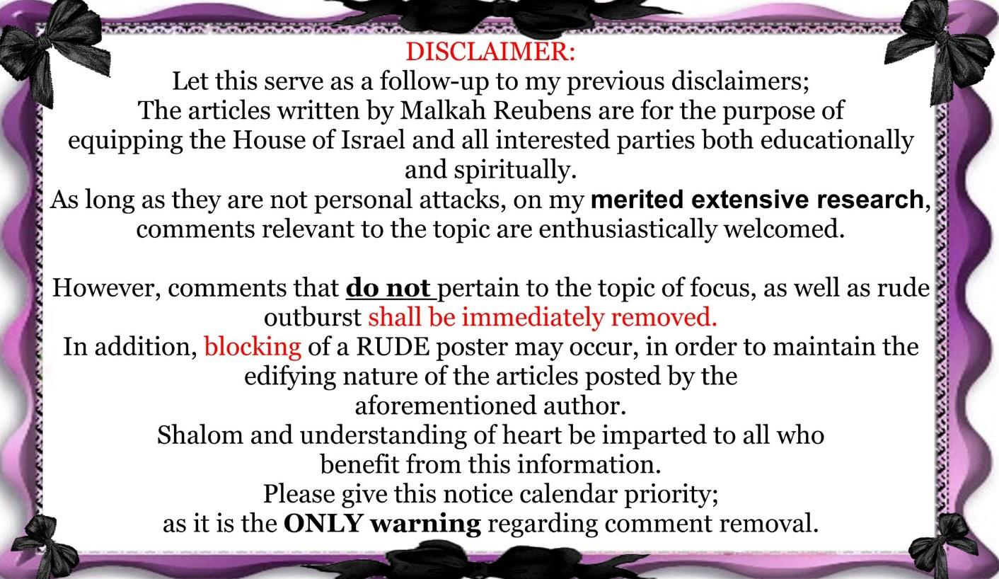

Contents
Mother & Father's day & The "hidden"
SATANIC ULTERIOR MOTIVE!

Evil Holidays! Pagan Sun Worshiping Feasts With A FEW "Hebrew ways [honor your parents]" ushered in by the Roman Catholic Church in order to syncretize religion. (a small amount of truth mixed with much EVIL=Christianity=Paganism)
SHOW ME WHERE יהוה SAID TO HONOR ANY DAY
ON THE GENTILE CALENDAR!

Celebrations of mothers and motherhood occur throughout the world. Many of these trace back to ancient festivals, like the Greek cult to Cybele, the Roman festival of Hilaria, or the Christian Mothering Sunday celebration. Despite this, in some countries Mother's Day has become synonymous with these older traditions.


Mother's Day dates back to ancient cultures in Greece and Rome. In both cultures, mother goddesses (Queen of Heaven). were worshiped during the springtime with religious festivals.
The ancient Greeks paid tribute to the powerful goddess Rhea, the wife of Cronus, known as the Mother of the gods (Queen of Heaven).
Similarly, evidence of a three-day Roman festival in Mid-March called Hilaria, to honor the Roman goddess Magna Mater, or Great Mother, dates back to 250 BCE.
As Christianity spread throughout Europe, the celebration of the "Mother Church" replaced the pagan tradition of honoring mythological goddesses.
The fourth Sunday in Lent (Weeping for Tammuz), a 40-day fasting period before Easter, became known as Mothering Sunday.
To show appreciation for their mothers, they often brought gifts or a "mothering cake" (Jeremiah 7:18) and over time, it began to coincide with the celebration of the Mother Church.
Mother's Day always falls on the second Sun-day of May, and like so many other holidays rooted in pagan sun-worship including Father's Day which always falls on the third Sun-day of June, usually fall on the day named in honor of their most powerful god -- The Sun!
Some other Mother's Day celebrations can be traced back to ancient
Greece in honor of Rhea, the Mother of the Gods.
During the 1600's, "Mothering Sunday" honored the mothers of England.
Servants would have the day off and were encouraged to spend the day with their mothers.
A special "mothering cake" was often brought along.
In the United States, Mother's Day was first suggested in 1872 by Julia Ward Howe (who wrote the words to the Battle Hymn of the Republic) as a day dedicated to peace.
In 1907 Ana Jarvis began a campaign to establish a national Mother's Day.
Ms. Jarvis persuaded her mother's church in Grafton, West Virginia to celebrate Mother's Day on the second anniversary of her mother's death, the 2nd Sunday of May.
By the next year Mother's Day was also celebrated in Philadelphia.
By 1911 Mother's Day was celebrated in almost every state.
In 1914, Mother's Day was proclaimed a national holiday.
Finland, Italy, Turkey, Australia, and Belgium also celebrate Mother's Day on the second Sunday of May.

Father’s Day
One source ("About,Inc.") describes the modern origin of Father’s Day in this way: "The modern origin of Father’s Day in the United States is not clear. Some say that it began with a church service in West Virginia in 1908. Others say the first Father’s Day ceremony was held in Vancouver, Washington. The president of the Chicago branch of the Lion’s Club, Harry Meek, is said to have celebrated the first Father’s Day with his organization in 1915; and the day that they chose was the third Sunday in June, the closest date to Meek’s own birthday.
"Regardless of when the first true Father’s Day occurred, the strongest promoter of the holiday was Mrs. Bruce John Dodd of Spokane, Washington. Mrs. Dodd felt that she had an outstanding father [Mr. Smart]. He was a veteran of the Civil War. His wife had died young, and he had raised six children without their mother. In 1909, Mrs. Dodd approached her own minister and others in Spokane about having a church service dedicated to fathers on June 5, her father’s birthday. That date was too soon for her minister to prepare the service, so he spoke a few weeks later on June 19th. From then on, the state of Washington celebrated the third Sunday in June as Father’s Day… States and organizations began lobbying Congress to declare an annual Father’s Day. In 1916, President Woodrow Wilson approved the idea, but it was not until 1924 when President Calvin Coolidge made it a national event…"
The holiday was made official in 1972 by President Richard Nixon (see below).
The Daily Beacon, Volume 90, Number 5 (June 14, 2002), elaborated: "In 1909, as Smart [i.e., Mrs. Bruce John Dodd, daughter of Mr. Smart] was listening to a sermon celebrating Mother’s Day, she thought of her father… Smart wanted a day to honor fathers with special religious services, special meals, small gifts and flowers. After sharing her idea with local religious leaders…, a resolution was passed to observe a Father’s Day."
Biography.com concurs, "… The inspiration behind the celebration of a Father’s Day is owed at least partly to its slightly earlier counterpart, Mother’s Day." The article also points out that Smart had the idea of setting aside a Father’s Day, when hearing a sermon on the "merits of setting aside a day to honor one’s mother" (Compare, too, PageWise, Inc., 2002, "History of Father’s Day").
"Hallmark Press Room" explains, under "Father’s Day 2003": "Father’s Day is always the third Sunday in June… Father’s Day is the fourth-largest card-sending occasion with nearly 90 million Father’s Day cards expected to be given this year in the United States… Smart’s daughter [Mrs. Bruce John Dodd] got the idea for Father’s Day in 1909 while listening to a Mother’s Day sermon at church. She encouraged local churches to institute a Father’s Day observance the following year on one Sunday in June, the month of her father’s birth… The holiday was made official in 1972 when President Richard Nixon signed a presidential resolution that declared Father’s Day as the third Sunday in June."

Apart from its obvious connection with Mother’s Day and its religious church background, is there any evidence that Father’s Day is of pagan and/or Catholic origin?
The Laboratorium writes under "Happy Father’s Day": "Father’s Day was originally a pagan holiday, the Great Sky-Father’s Day. Part of the week of celebrations leading up to the summer solstice, the day was given over to celebrating the Sky-Father’s providing for his human children with rich gifts of sun and rain. Gifts of sacrificial goats and sheep (recognizable by the festive ribbons bound about their necks) were supplemented with prayers for his continued guidance in the human journey towards spiritual adulthood.
"The precise transition to the Father’s Day we know today is lost in the mists of time, but it seems that several generations of CHRISTIAN PRIESTS gradually ATTEMPTED TO NEUTRALIZE THE PAGAN RITUALS by focusing on the literal steps of the ceremonies, rather than their spiritual meanings. The passing of celebratory garlands from sons to fathers was retained, and reemphasized as the central act of the great Sky-Father’s celebration, rather than the sacrifices and prayers. As part of this reinterpretation, the practice of tying ribbons was moved from the animals to the fathers, and appears to be recognizably the origin of the custom of giving ties on Father’s Day."
The connection with pagan and/or Catholic origins becomes even clearer, when considering modern Father’s Day celebrations and customs in certain European countries. In Palermo, Italy, Father’s Day is celebrated on March 19 in order to honor "Holy Joseph." On that day, old furniture, tables and other items are burned. As "Bank4Fun" explains, "this custom is derived from the Worship of the Sun, which has an historical origin in Palermo."
In Austria, Father’s Day, which is celebrated in June, is a Christian CHURCH holiday. In Germany, "Father’s Day" has been celebrated, since 1936, on the same day as "Ascension Day." This CATHOLIC holiday, also known as "the Day of the Lord," is always kept on a Thursday—40 days, or on the 5th Sunday, after Easter—to celebrate Christ’s ascension. On this day, men visit restaurants, consuming a lot of alcohol, while it is unfashionable to travel with a woman on that day. "Glaube Aktuell" and Professor Gottfried Rehm, Fulda, explain that these restaurant visits, as well as Catholic processions on that day, have their origins in Germanic customs, when men drank alcohol and asked their gods to bless the harvest for the year. Others, such as doctor of theology, Manfred Becker-Huberti, point out that the Father’s Day celebrations might be derived from honoring Pope Leo III (795–816).
Studying these facts in conjunction with the section on "Mother’s Day," we must again emphasize that it is the personal decision of each Christian whether or not to keep those days. His decision must be based on personal faith and conviction, knowing that whatever is not from faith is sin (Romans 14:23).
USA TODAY ARTICLE -By Rebecca Heslin,(6/19/09) ON THE BLATANT PAGAN CELEBRATIONS HAPPENING AROUND THE WORLD T'ROW SUNDAY IN HONOR OF THE SUMMER SOLSTICE AND PAGAN SUN-GOD. IT IS ALSO FATHER'S DAY SUNDAY, COINCIDENCE?:
10 GREAT PLACES TO BASK IN THE SUMMER SOLSTICE
By Rebecca Heslin, USA TODAY Slather on some SPF and plan an extended day in the sun this Sunday during the summer solstice. As cities around the world celebrate the longest day of the year in different ways, IgoUgo.com content manager Michelle Doucette shares her top picks for enjoying endless hours of sunshine.
GOOGLE MAP: Zoom in on these sun spots
ARCHIVE: Read more '10 Great' columns
Cairo Sun worshipers will feel right at home in Cairo during the solstice. "In 2006, an ancient sun temple was discovered in Cairo," Doucette says. "The site was once part of the Heliopolis, the center of sun worship in ancient Egypt." Sunday through Tuesday, the Fête de la Musique celebrates the solstice with free concerts around the city in streets, parks, museums and even train stations. touregypt.net/cairo
Bar Harbor
Maine For heliophiles looking to make the most of this celestial celebration, this Northeast coastal town should be on the itinerary. "It's the first place to see the sun rise on the East Coast," Doucette says. "An easy hike or drive to the top of Cadillac Mountain pays off with awe-inspiring 360-degree views of the sunrise." Legacy of the Arts Festival — an eight-day fest of art, music and culture — also begins this weekend, so take in a live outdoor concert or take a historic tour. 800-345-4617, barharborinfo.com
Sedona
Arizona "The rich Native American culture of Sedona makes it a perfect place to celebrate," Doucette says. "The Sun Dance is an important Native American ritual often performed around the time of the summer solstice." Make the most of those extra hours of daylight by scoping the natural landscape of red-rock monoliths. "Watching the sun rise over Sedona's otherworldly red-rock formations is a moving experience," she adds. 800-288-7336, visitsedona.com
Cusco
Peru
Tourists and hikers visiting the area this week will be treated to a festival of epic proportions. "Machu Picchu is the area's most important attraction and home to the Temple of the Sun, where during the solstice the sun shines directly on the temple's ceremonial stone," Doucette says. "The city is home to Inti Raymi, one of South America's largest festivals and a week-long solstice celebration of the sun." On Tuesday, high priests decked out in ceremonial robes, officials of the court and nobles parade through the flower-bedecked streets to music, prayers and dancing. As the sun sets, stacks of hay are set on fire, and the locals dance. cuscoperu.com
Seattle If you find yourself soaking up the rays in the Northwest, Seattle celebrates the solstice in style. "Freemont is Seattle's funkiest neighborhood and the site of the 38th annual Freemont Fair, a celebration of the summer solstice," Doucette says. "The event is free, but all donations go to a good cause — they support the needy in Seattle." Watch as local performers take to the streets to showcase plays and concerts, and don't forget to treat your taste buds to the local cuisine. 206-461-5840, visitseattle.org
Stonehenge
England "Thousands of druids, partygoers and modern-day pagans celebrate the solstice at Stonehenge every year," Doucette says. The northeastern entrance to the sacred site exactly matches the direction of the midsummer sunrise. "Many believe its precise alignment during the solstice is too perfect to be accidental; many scholars believe Stonehenge was built as a monument to the sun." stonehenge.co.uk
Reykjavik
Iceland
"Summer is high season in Iceland," Doucette says. "In past years, to visit during the solstice was cost-prohibitive. This year the exchange rate is dramatically more favorable." The sun shines nearly 24 hours a day, which means "Reykjavik's legendary nightlife is enjoyed in the light rather in the near-total darkness of winter," Doucette says. visitreykjavik.is
Barcelona "The Festival de Sant Joan (St. John the Baptist) in Barcelona is a celebration of the arrival of summer," Doucette says. "Music and dancing go on all night, but the festival is most known for its bonfires, associated with pagan celebrations of the solstice and are thought to add to the sun's power." Hit the beaches during the day, then take to the streets as the "Flama del Canigo," or flame, travels across the city to light bonfires. Citizens invite visitors to participate by burning something to rid themselves of bad luck. barcelonaturisme.com
Fairbanks
Alaska "The longest day of the year brings the midnight sun and with it many ways to enjoy," Doucette says. "Baseball games, runs, festivals and dancing are all going strong at the stroke of midnight." Eagle Summit, a mountain north of Fairbanks, is a popular spot to toast the sun — think picnic meets tailgate party. The city comes alive with music, shopping, concerts and a street fair, with many shops and eateries staying open past midnight. 800-327-5774,explorefairbanks.com
Hammerfest
Norway Much like Fairbanks, Hammerfest sits along the Arctic Circle, so the summer solstice brings with it the midnight sun. This city "bills itself as the world's northernmost town," Doucette says. During summer months, she adds, sunlight is a near-constant. Fun runs, cruises and festivals take place around the city during the solstice, and Doucette says the area has magnificent sunrises, and during the solstice the sun circles in the sky above. visitnorway.com
Evil Holidays!
Pagan Sun Worshiping Feasts With A FEW "Hebrew ways [honor your parents]" ushered in by the Roman Catholic Church in order to syncretize religion.
(a small amount of truth mixed with much EVIL=Christianity=Paganism)
IS MOTHER & FATHER'S DAY IN THE SCRIPTURES? https://vimeo.com/42069011
Man Made Holidays/ Don't Eat The Poison Apple! https://www.facebook.com/video/video.php?v=1334439378595&…
Here you can find more detailed information. http://www.mothersdaycentral.com/about-mothersday/history/

"LEARN NOT THE WAY OF THE HEATHEN"
